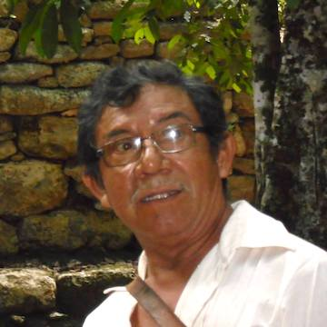

ДОН БАРТОЛОМЕ
ПОСВЯЩЕНИЕ
Многие путешественники пытаются попасть на прием к Посвященному Дону Бартоломе - Старейшине Майя, которого также считают очень сильным целителем. Годами люди тщетно пытаются договориться о встрече, не оставляя до последнего надежды с ним увидеться и поговорить, однако лишь немногим хватает терпения идти до конца. Но это меньшинство будет поистине вознаграждено поразительным общением с одним из самых интересных и одаренных людей в Мексике, обладающим сильнейшей энергетикой.
Странички из дневника.
Мексика, Юкатан, 4 марта 2012.
Весь день я не находила себе места, а должна была провести этот день в умиротворенном состоянии. Дон Бартоломе сказал, что очень важен настрой и сохранение внутреннего огня. Мешало именно желание его сохранять. Как-то неторжественно проходила подготовка к этой, такой долгожданной, ночи. Лучше всего у меня получилось спать. Долго. Без снов. Проснулась к вечеру от грохота.Такого дождя я не видела никогда, гром был похож на выстрелы, в небе творилось что-то страшное: зарницы, молнии, ливень - стеной. Нам через два часа выезжать. Дон Бартоломе ждал нас к 11 ночи. Алик двигался по дому как-то боком и вел себя отмороженно. Внезапно погас свет.
Выглянули в двери — во всей деревне. Что-то зловещее было во всем происходящем. Захотелось сесть поскорее в машину и ехать. Быстрее уехать из дома, такого древнего и массивного, а сейчас призрачного и какого-то нереального, зыбкого. Мы так и поступили. Схватили заранее приготовленные вещи и поехали в дождь, в ночь. Хотелось поскорее увидеть фонари на улицах, свет в домах; подкрадывалась мысль, что там, дальше, ничего нет; света нет нигде и, может быть, уже никогда не будет.
Ехали молча и сосредоточенно, каждый думал о своем, оказалось, что об одном и том же. Проехали совершенно темный, замерший Изамаль, еще одну деревеньку — темно. Мы были напряжены и подавлены. Дорогу медленно перешла собака, на вид обычная мексиканская собака, только вокруг нее почему-то было зеленоватое мерцание. Алик сказал, что это глаза светились. Ну конечно, и до хвоста все тело освещали, и вокруг - сантиметров на 5... Дождь и молнии сопровождали нас все это время.
Позвонил Хуан, сказал, что они не приедут к Бартоломе, что застряли где-то с Лаурой. Тут я по-настоящему сдрейфила.
Когда я смотрю страшные фильмы, часто задаю себе вопрос: и как они здесь оказались? Какого черта они там делают? В жизни все гораздо проще, оказывается. Просто наступает темнота. Просто хочется бежать. Или замереть. Или проснуться. Или быстро-быстро ехать ... по мокрой дороге, облитой ливнем.
Километров через 60 ливень закончился. Как прочертили полосу, отделяющую мокрый асфальт от сухого. И все. Но света еще мы не видели, это была скоростная трасса и деревень по дороге не было. Стало легче на душе. И появилась надежда, что это еще не конец цивилизации.
- Ух ты... Дождя как и не было...
- Ахо! - выкрикнул Алик индейское приветствие-благословление.
И мы поехали, распевая индейские песни, моментально забыв о дожде, темноте, страхе, посмеиваясь над собой, над зеленоглазой собакой...
- Гей-йа гегайо, гей-йа гегайо, гей-йа гегайо, гей- йа гей -йа -ГО!..
В доме дона Бартоломе свет был погашен. Мы посидели несколько минут в нерешительности, решая, что делать: стучать, ждать... Алик вышел из машины, тут же из темноты двора появилась хрупкая фигура Бартоломе. Он стоял с рюкзаком, в белой одежде у двери дома, скромный, тихий и трогательный. Мы обнялись и сели в машину.
Вам когда-нибудь приходилось ездить в одной машине с персоной королевских кровей? Мне до знакомства с доном Бартоломе - никогда. Дон Бартоломе - потомок 3 королевских родов : Шив, Коком и Вотан. Он и ведет себя, как король, щедро раздавая богатство, награждая и при этом - простота и скромность... Но, кровь есть кровь, с чувством достоинства (не путать с важностью!) и осознания своей миссии и ответственности...
Мы ехали в сторону Ушмаля, возле Тикуля свернули в темноту , я приготовилась к тому, что дороги не будет, но, на удивление, дорога была накатанной и ровной, хоть и узкой. Потом начались холмы, потом, холмы среди джунглей. Но, в общей сложности, ехали не долго по мексиканским меркам, час или чуть больше.
В машине почти не разговаривали, в основном о дороге, о дожде...
- Приехали, - сказал дон Бартоломе.
Мы остановились, загородив всю дорогу машиной. Обочины просто не было.
- Так и оставим машину?- забеспокоился Алик.
- Здесь никто не ездит, особенно ночью, - сказал Бартоломе. - Поспешим.
Я и днем в джунгли не очень хожу, но ночью... Стена, чаща. Бартоломе уверенно шел вглубь и оказалось, что и там есть что-то типа тропинки. Страха не было, я не думала даже о больших кошках (мой самый большрой страх), мы шли по-деловому, чуть в гору, освещая дорогу фонариком Бартоломе.
Шли ... минут пятнадцать, может, двадцать.
- Сейчас поднимимся на эту гору, - произнес дон Бартоломе.
Я горы не видела, но по тому, что стало идти тяжелее, поняла, что идем вверх.
Мы остановились, я поняла, что мы на вершине холма, увидев звезды. Они были низкими и нереально большими. Дышалось как-то легко, глубоко и спокойно, я даже не запыхалась от подъема.
Бартоломе молча начал развязывать рюкзак. В руках у меня был только пакет с белой одеждой, которую нам велено было не надевать в дорогу, а взять с собой.
- Посидите, я все сейчас приготовлю, сказал дон Бартоломе. Присвечивая фонариком, достал белое покрывало, кусочки копаля, саумадор (окуривательную чашу), 7 свечей, символизирующих 7 направлений, и маленькую живую ящерицу. Я не посмела спросить, зачем ящерица, но мысли зароились самые разные. Пока я думала о ней, дон Бартоломе закончил приготовления.
- Раздевайтесь, - сказал он.
- Как?
- Снимите одежду и спуститесь немного вниз. Там - озеро. Ты, -он указал на Алика, - иди в эту сторону, а ты, -сказал мне, - в эту... Искупайтесь в озере, наденьте одежду и возвращайтесь. Старайтесь не разговоривать, берегите энергию, вам понадобятся силы этой ночью.
Я опущу в своих воспоминаниях рассказ о том, как я шла к озеру, как вглядывалась в темную воду в поисках крокодилов, как ощупывала руками берег и как плюхнулась в воду, услышав, что Алик поплыл. В это мгновение я поняла, что героев не существует. Подвиги совершают от неизбежности.
Я поплыла. Я - по-плы-ла... Плыло все: небо, звезды, луна, вода, оказавшаяся мягкой и свеже-теплой, плыли какие-то мысли, воспоминания, волнами наплывала любовь, нежность, в голове звучала речь, музыка... Обнаружила я себя уже на берегу, одетой в белое просторное платье. Алик (бросил меня!) уже тихо разговаривал с доном Бартоломе о чем-то...
Мы сидели рядом, втроем: Алик, Бартоломе и я.
- Здесь проходило мое второе посвящение в 13 лет, - тихо сказал дон Бартоломе. Это наше семейное место. Сюда я приведу через несколько лет Терезиту.
Он долго окуривал нас копалем, пел и молился на Майя.
Что-то сделал с ящерицей, поговорил с ней и положил в траву. Она подумала немного и медленно пошла... (Слава Богу, живая, - подумалось мне)...
- Сейчас вы ни о чем не должны думать, просто смотрите. Можете закрыть глаза.
Он пел и молился.
А я смотрела на звезды, которые вдруг начали двигаться, рисуя знаки в очень низком небе, я видела огненные фигуры, цифры, буквы, какие-то созвездия, названий которых никогда не знала, но тогда совершенно точно помнила, знала, как их называют. Я начала понимать смысл молитв на языке Майя, я видела звездный дождь и слышала чудесную музыку. Со мной говорили. На Майя. Я понимала каждое слово, понимала песню, которая звучала вдалеке... Я видела много того , о чем еще буду думать и вспоминать...
- Откройте глаза и нагните головы, - сказал Бартоломе громко.
Я была уверена, что глаза были открыты все это время...
Он хлестал нас веником из пахучих трав и веточек, пел и слезы текли у всех троих, не переставая.
Дыхание участилось, сбилось. Бартоломе опустил руки, казалось, он очень утомлен.
- Вы знаете, что сегодня произошло, - это был не вопрос, утверждение. - Вы получили коды. Мои космические коды. Это - знание древних Майя. Вы видели знаки в небе. Эти коды будут включаться тогда, когда Земле будет необходима помощь, когда людей нуждо будет поддерживать и направлять. Это время уже близко. Вы за этим пришли в Майя.
И мне было дано знание о вас. Все остальное вы получите обычным путем, как ученики. Но через 52 дня мы снова с вами придем сюда. И посвящение будет завершено. Это год такой. Обычно посвящения ждут годами. Сейчас все должно произойти быстро. Времени ждать - нет.
Мы подошли к машине, почти сразу рассвело, молча доехали до дома Бартоломе. Он нас обнял и сказал, что еще 4 ночи будут продолжаться видения. Приказал спать днем и сохранять энергию.
Я спросила, могу ли я рассказать обо всем, что произошло с нами этой ночью своим близким, друзьям, он сказал, что ту часть, которая относится к чувствам, - да, а ту, что к Знанию, пока нет. Через 4 дня он ждет нас на церемонию Священного Огня, которая будет посвящена Держателю Года, и мы поговорим.
... Мы пили крепчайший кофе в забегаловке, почему-то открытой в такую рань, смотрели друг на друга и не понимали, где сон, где явь, а где начинается Служение...
Но у нас есть еще четыре ночи, чтобы хоть немного разобраться во всем этом...